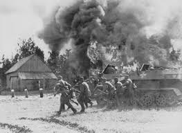

Operation Barbarossa
Operation Barbarossa was the largest and most brutal military campaign in history, launched on June 22, 1941, when Nazi Germany invaded the Soviet Union. For the Soviet Union, this wasn’t just a military assault—it was an existential struggle to survive against an enemy determined to annihilate it. Hitler’s forces aimed to obliterate the Soviet state, eradicate its people, and seize the land and resources for Nazi Germany. What followed was a war of unimaginable scale, one that would test the limits of Soviet resilience and sacrifice.
The Initial Onslaught
The German invasion hit with devastating speed and force. With over 3 million soldiers, hundreds of thousands of tanks, and aircraft, Operation Barbarossa split into three major fronts: Army Group North, heading toward Leningrad (now St. Petersburg), Army Group Center, advancing on Moscow, and Army Group South, pushing into Ukraine. The Germans quickly made ground, encircling Soviet forces, and smashing through defenses. Major cities fell, and millions of Soviet soldiers and civilians were caught in the relentless advance.
For the Soviet Union, it was a nightmare come to life. Stalin had been warned of the invasion, but he didn't believe Hitler would attack. The shock was profound. In a matter of weeks, the Germans captured vast swaths of Soviet territory, including critical cities and industrial centers. The Soviet Union’s defenses were crushed under the sheer weight of the German blitzkrieg tactics.
Soviet Resilience and Counterattack

Despite the overwhelming losses, the Soviet Union didn’t crumble. The vastness of its territory became both a burden and an advantage. As German forces advanced, the Soviets employed scorched earth tactics, burning crops, demolishing infrastructure, and retreating further into the heart of their country to deny the Germans vital resources. Every inch of Soviet land was fought for—by soldiers, by civilians, by anyone who could hold a weapon.
In the face of destruction, the Soviet Union unified in its resistance. The brutality of the invasion, the destruction of cities, and the horrors faced by the civilian population rallied the people to defend their land at all costs. Women, too, played a crucial role, fighting in combat, serving as medics, and working in factories. The war wasn’t just fought on the frontlines—it was fought by an entire nation.
The German Stalemate and Soviet Counteroffensive
The Germans, despite early successes, were stretched too thin. The Soviet Union had far greater manpower, and as the cold of winter set in, the Germans were unprepared for the bitter conditions of the Russian winter. The Red Army, battered but not broken, launched a counteroffensive outside of Moscow in December 1941. What followed was a turning point—the Germans were forced to retreat for the first time in the war.
This was a moment of profound significance. It was a defiant rejection of the idea that the Soviet Union would simply be crushed. It was the first crack in Hitler's seemingly invincible campaign, and it gave the Soviets the hope and momentum to turn the tide of the war.
The Battle for Survival
While the Germans continued to push forward in the South and North, the Soviet Union dug in. The fight was no longer about individual battles—it became a war of attrition. Every inch of ground was contested. Cities were obliterated. Entire populations were displaced or killed. In addition to military victories, the Soviets began to adapt, learning from their early mistakes and developing counter-tactics that slowly began to erode the German advantage.
By 1944, after years of bloody conflict, the Soviets had pushed the Germans out of their land entirely and were advancing into Eastern Europe. From the edge of annihilation, the Soviet Union had not only survived but had become the force driving Nazi Germany back.
Legacy of Operation Barbarossa
The Soviet Union paid an unimaginable price for its survival. Over 20 million Soviets would die during the war—soldiers and civilians alike. Operation Barbarossa showed the world the Soviet Union’s indomitable will to fight and its ability to survive when faced with destruction. The scars of the war would remain, but so would the memory of a nation that held firm against the most vicious and systematic campaign of conquest in modern history.
The ultimate defeat of Nazi Germany was sealed on the Eastern Front, where the Soviets would continue to push westward, eventually reaching Berlin in 1945. The legacy of Operation Barbarossa is the story of the Soviet Union’s struggle to defend its very existence—a struggle marked by horrific losses but also by extraordinary resilience, culminating in the victory that helped bring down the Nazi regime and change the course of history.